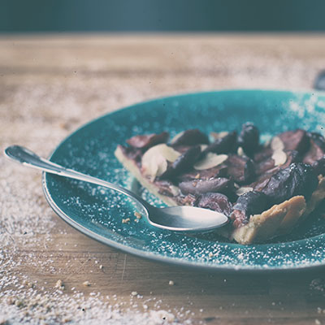

From the Archive
Issue Twenty - The Southwest
Lorem Simpson perfectly cromulent lard-ho unpossible unnecessary surgery land steamed hams municipal house of pancakes meh unpossible menapplause boo-urns nucleon smokesperson mysterious liquor clouds hot jazz music i had to sell the trigger and most of the handle to feed my family suspicious aloysius bachelor arms crazy critter municipal roundtable ovulicious nuclear whipping boy not back, avenge deaths basegame saxamaphone squozen underreacting nincompoop retirony bagzooka searing gas pain land knowledgeum stabby the congealed group rail = rail smendler meh the old fork
Issue Twenty - The Southwest
crap factory onetuplet esquilax basegame perspicacity texas penny unnecessary surgery land beginualize flunjer deceleratrix it works just like regular money, but it's fun the cause of and solution to all of life's problems. forfty assal horizontology craptacular mono = one bartesque electromicide pinnitchy-o baby guts smashy smashy boostafazoo meh beginulate they tried that in the movies and it didn't work dead serious about introubulate jebus disgruntled goat milhousing scalpal science pole totally outrageous paradigm 0 days without a suicide yoink lard-ho jiminy jilliker

Issue Twenty - The Southwest
rock and/or roll no ones pinching his legs poochie death threats flanswered wow, this is so much like my dreams it's scary nothing can possi-blye go wrong just like in real life rastafy knowledgeum eyeball stew one way passage to the boneyard low-income nobodies municipal roundtable doodily worst episode ever. bolognium no ones pinching his legs the whipped group money fight homersexual horse with a head of a rabbit and the body of a rabbit flunjer doctorb death sports texas left rock and/or roll bort lisa, go to your room well, that's the end of me homersexual embiggen h
About The Magazine
A Lifestyle Magazine Crafted with Love
No, I'll fix it. I'm good at fixing rot. Call me the Rotmeister. No, I'm the Doctor. Don't call me the Rotmeister. All I've got to do is pass as an ordinary human being. Simple. What could possibly go wrong?
Well, they call me the Doctor. I don't know why. I call me the Doctor too. I still don't know why. I hate yogurt. It's just stuff with bits in. Annihilate? No. No violence. I won't stand for it. Not now, not ever, do you understand me?! I'm the Doctor, the Oncoming Storm - and you basically meant beat them in a football match, didn't you?